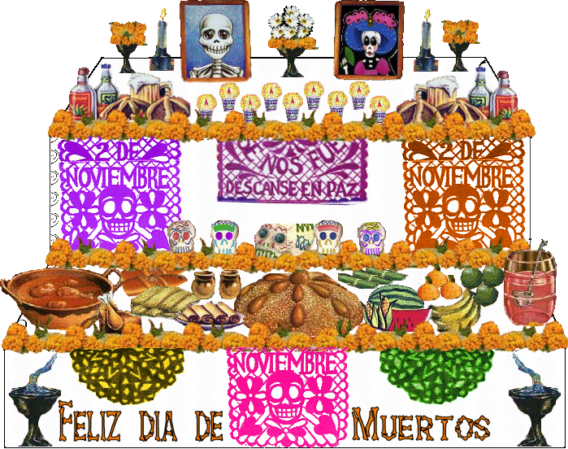

Ofrendas de día de muertos La ofrenda es ese ritual colorido donde el individuo y la comunidad están representados con su dádiva; es un acto sagrado, pero también puede ser profano: la tradición popular es la simbiosis de la devoción sagrada y la práctica profana.
Ofrendar, en el Día de Muertos, es compartir con los difuntos el pan, la sal, las frutas, los manjares culinarios, el agua y, si son adultos, el vino. Ofrendar es estar cerca de nuestros muertos para dialogar con su recuerdo, con su vida. La ofrenda es el reencuentro con un ritual que convoca a la memoria.
La ofrenda del Día de Muertos es una mezcla cultural donde los europeos pusieron algunas flores, ceras, velas y veladoras; los indígenas le agregaron el sahumerio con su copal y la comida y la flor de cempasúchil (Zempoalxóchitl). La ofrenda, tal y como la conocemos hoy, es también un reflejo del sincretismo del viejo y el nuevo mundo. Se recibe a los muertos con elementos naturales, frugales e intangibles -incluimos aquí las estelas de olores y fragancias que le nacen a las flores, al incienso y al copal-.
La ofrenda de muertos debe tener varios elementos esenciales. Si faltara uno de ellos, se pierde aunque no del todo el encanto espiritual que rodea a este patrimonio religioso.
Elementos imprescindibles para recibir a las ánimas:
- El agua. La fuente de la vida, se ofrece a las ánimas para que mitiguen su sed después de su largo recorrido y para que fortalezcan su regreso. En algunas culturas simboliza la pureza del alma.
- La sal. El elemento de purificación, sirve para que el cuerpo no se corrompa, en su viaje de ida y vuelta para el siguiente año.
- Velas y veladoras. Los antiguos mexicanos utilizaban rajas de ocote. En la actualidad se usa el cirio en sus diferentes formas: velas, veladoras o ceras. La flama que producen significa "la luz", la fe, la esperanza. Es guía, con su flama titilante para que las ánimas puedan llegar a sus antiguos lugares y alumbrar el regreso a su morada. En varias comunidades indígenas cada vela representa un difunto, es decir, el número de veladoras que tendrá el altar dependerá de las almas que quiera recibir la familia. Si los cirios o los candeleros son morados, es señal de duelo; y si se ponen cuatro de éstos en cruz, representan los cuatro puntos cardinales, de manera que el ánima pueda orientarse hasta encontrar su camino y su casa.
- Copal e incienso. El copal era ofrecido por los indígenas a sus dioses ya que el incienso aún no se conocía, este llegó con los españoles. Es el elemento que sublima la oración o alabanza.
- Fragancia de reverencia. Se utiliza para limpiar al lugar de los malos espíritus y así el alma pueda entrar a su casa sin ningún peligro.
- Las flores. Son símbolo de la festividad por sus colores y estelas aromáticas. Adornan y aromatizan el lugar durante la estancia del ánima, la cual al marcharse se irá contenta, el alhelí y la nube no pueden faltar pues su color significa pureza y ternura, y acompañan a las ánimas de los niños.
Los indígenas creían que la cempasúchil era una planta curativa, pero ahora solo sirve para adornar los altares y las tumbas de los difuntos. Por esta razón se dice que a lo largo del tiempo la flor fue perdiendo sus poderes curativos. Flor de cempasúchil significa en náhuatl "veinte flor"; efeméride de la muerte.
- El petate. Entre los múltiples usos del petate se encuentra el de cama, mesa o mortaja. En este particular día funciona para que las ánimas descansen así como de mantel para colocar los alimentos de la ofrenda.
- El izcuintle. Lo que no debe faltar en los altares para niños es el perrito izcuintle en juguete, para que las ánimas de los pequeños se sientan contentas al llegar al banquete. El perrito izcuintle, es el que ayuda a las almas a cruzar el caudaloso río Chiconauhuapan, que es el último paso para llegar al Mictlán.
- El pan. El ofrecimiento fraternal es el pan. La iglesia lo presenta como el "Cuerpo de Cristo". Elaborado de diferentes formas, el pan es uno de los elementos más preciados en el altar.
- El gollete y las cañas se relacionan con el tzompantli. Los golletes son panes en forma de rueda y se colocan en las ofrendas sostenidos por trozos de caña. Los panes simbolizan los cráneos de los enemigos vencidos y las cañas las varas donde se ensartaban.
